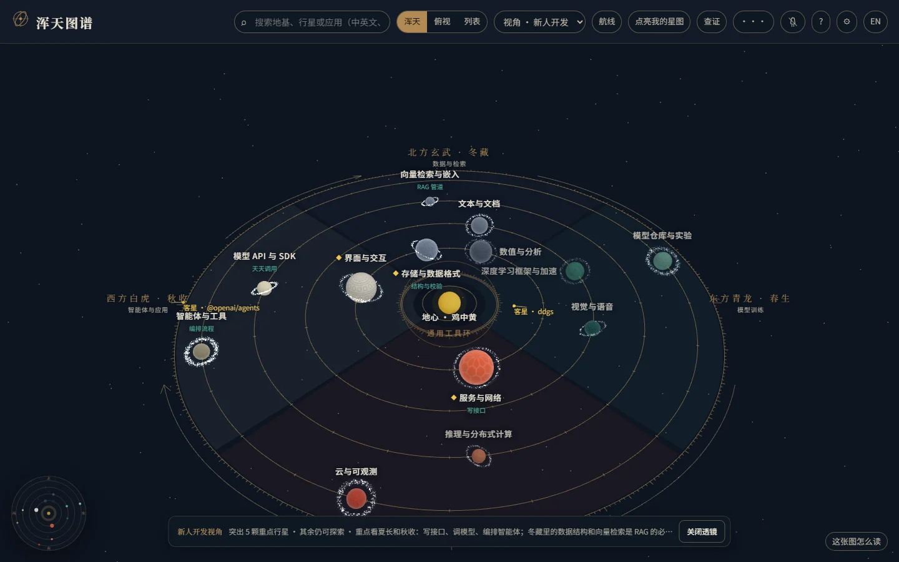
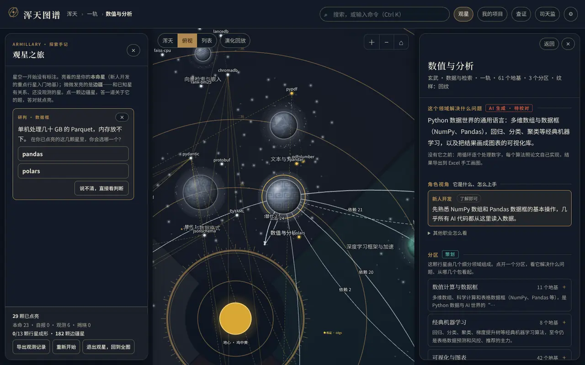
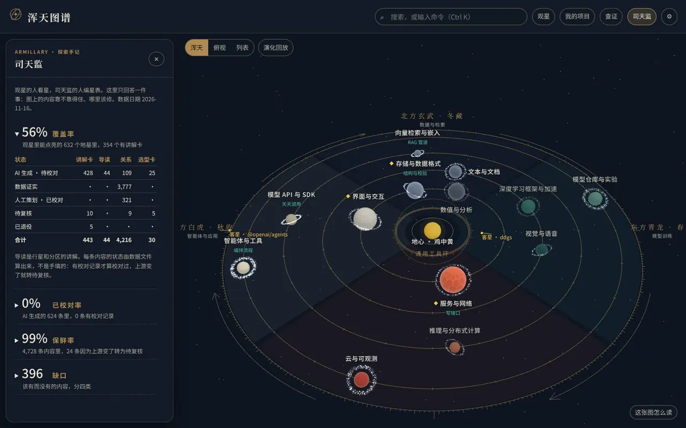
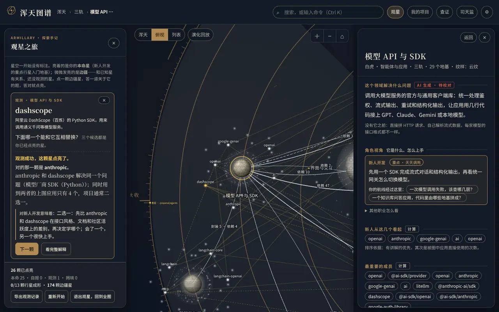
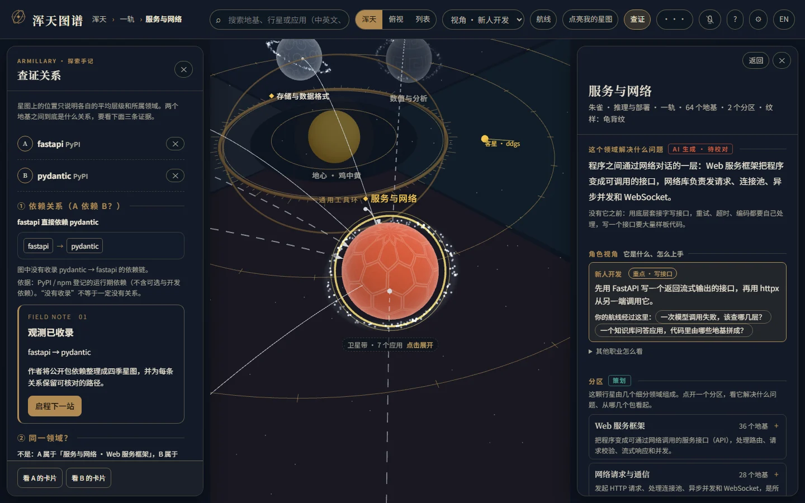

把 AI 开源生态，
画成可查证的星图。
一张星图，三层结构：内容、学习、治理。
每一条被用来判断的知识，都看得见来源、状态和保鲜期。
经验越来越多，
却说不清它们为什么有效。
我每天都在用 AI，也总结出了不少经验和方法，但始终没有一套结构化的方法，能解释自己的改进为什么有效。缺少结构的知识很难持续精进，也没法分享给别人。
所以我想做一张能看清结构的地图。我的判断是：认知结构决定判断力，AI 时代更需要能在具体场景里做选择的人。第一版做到了“看清全局”；V2 要让用户在场景里做判断，并且让每条知识靠不靠得住都看得见。

事实和判断，
分开建模。
知识之间的关联千变万化，逐条自由解释就成了黑箱。我把它归纳成六种标准关系：用有限的类型概括无限的关联，每条线都标出类型、方向和证据等级。
- 依赖A 运行时直接用到 B
- 封装A 在 B 之上提供更好用的接口
- 实现A 实现了 B 规定的协议或格式
- 协作A 和 B 常被一起用，各管一段
- 替代A 和 B 解决同一个问题，通常二选一
- 传承B 是 A 的后继
“谁依赖谁”来自依赖清单，数据能证实。解释用固定模板生成，变量只来自数据，同一种关系永远是同一种说法。
“什么情况下选谁”写成选型卡：给出带约束的情境，每个候选给出“贴合、可行但有代价、与约束冲突”三种结论和理由。一个情境可以有不止一个说得通的选择，区别在代价。首批 30 张。

把“靠不靠得住”，
做成产品的一层。
这张图里的内容有三种来源：数据算出来的、人工策划的、AI 起草的。它们混在一起，每周还会随上游变化而过时。这正是企业知识库要解决的问题，所以我把知识库管理的做法搬进了产品。
1,604 个地基、13 颗行星、六种关系、30 张选型卡。
一条主线：点亮一颗星，回答一道题，在情境里做一次选择。
每条内容的状态、待校队列、每期变更和缺口都看得见。
- 采采集
每周从公开接口采集依赖与应用。
- 编编校
策划、AI 起草、校对，每条带状态。
- 学学习
观测题与情境研判。
- 用使用
把结构导出给 AI 当上下文。
- 馈反馈
纠错和答错集中的题，回到编校。
| 知识库的做法 | 企业产品里的样子 | 在浑天图谱里 |
|---|---|---|
| 内容生命周期 | 草稿、待审、已发布、待复核、退役 | 统一五种状态：AI 起草、数据证实、人工校对、待复核、已退役 |
| 保鲜期 | 按固定周期提醒复核 | 由上游变化触发：依据的数据变了，这条内容才转为待复核 |
| 用即是审 | 客服引用文章时顺手确认或标记 | 一道题大家集中答错，它背后的讲解进入“疑似讲不清”队列 |
| 缺口分析 | 搜索无结果的词 | 缺口榜：搜不到的词、没上图的应用、重要却没有判断型关系的地基 |
| 健康度看板 | 已核验率、过期率、覆盖率 | 司天监首页四个数：覆盖率、已校对率、保鲜率、缺口数 |

司天监第一次运行就标出 24 条待复核。其中一条是：某个框架的仓库已经归档，它却在一张选型卡里被判为“合适”。
可以带到企业知识库的三条设计
- AI 起草的内容，带着状态出厂。批量生成不难，难的是说清哪些校过。状态对读者可见。
- 保鲜期由上游变化触发。复核的人只看真正变了的那部分。
- 知识要能交给智能体。导出的知识包带出处和状态；智能体读到“待校对”，知道该提醒人核对。
题目有区分度，
进度才可信。
原型只有一种问法，而数据里依赖关系太多：93% 的题，答案都是同一个选项。我重做了出题规则：六种问法，干扰项必须经得起查证，并且每道题都算得出“瞎猜能对几成”。
进度也只认核对过的作答：一颗行星要“成形”，入门的 5 颗星全亮之外，还要在这颗行星里答对至少 3 道题。

AI 写出来的交互，
由我试用后校准。
功能由 AI 实现，合不合理由我用过才知道。我通过试用检验 AI 的设计，校准了 12 处交互体验，并把结论沉淀成两条规则，后面的新功能照着做。
试着分清，
位置、路径与空白。
下面三组关系直接取自原项目随站依赖图。选择一组，查看结论及其依据。这里是作品集内的固定快照演示。
圈层表示代表包平均接近依赖底层的程度。两颗行星一内一外，不足以判断其中一个包依赖另一个。
FastAPI → Pydantic
快照中收录了直接依赖。下方截图展示原产品的查证界面。

六步路线，
走完了三步半。
每一步单独交付、单独验收，前一步没过不进下一步。